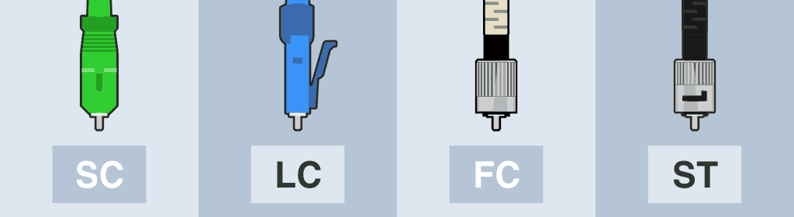
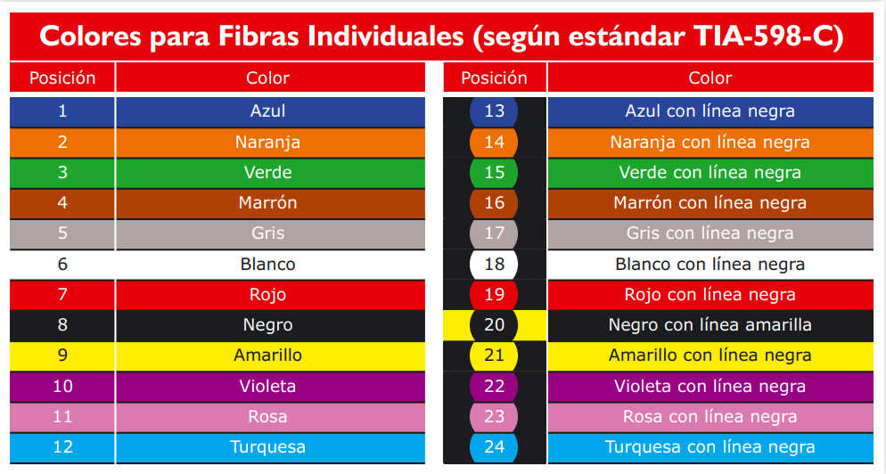

Tipos de conectores de fibra ótica
Las siglas SC, LC, FC y ST corresponden a los tipos de conector óptico más comunes en aplicaciones FTTH y en redes de datos.
Conector FC. Conector de Ferrule (Ferrule Connector).
Es un conector roscado con una fijación muy resistente a vibraciones. Se utiliza en aplicaciones sometidas a movimiento, en los instrumentos de precisión (como los OTDR) y es muy popular en CATV. Para fibras monomodo. Sus pérdidas de inserción alcanzan los 0,3 dB.
Conector ST. Punta Recta (Straight Tip).
Es similar en forma al conector FC, pero su ajuste es similar al de un conector BNC (montura en bayoneta). Se utiliza en fibras multimodo. Sus pérdidas de inserción rondan los 0,25 dB.
Conector LC. Conector lucent (Lucent Connector) o Conector pequeño (Little Connector).
Ajuste similar a un RJ45 (tipo push and pull). Más seguro y compacto que el SC, así que permite incluso mayores densidades de conectores en racks, paneles y FTTH. Para fibras monomodo y multimodo. Pérdidas de 0,10 dB.
Conector SC. Conector de suscriptor (Suscriptor Connector) o Conector Cuadrado (Square Connector).
Ajuste rápido a presión. Es compacto, permitiendo integrar gran densidad de conectores por instrumento. Se utiliza en FTTH, telefonía, televisión por cable, etc. Para fibras monomodo y multimodo. Pérdidas de 0,25 dB.
Tipos de pulidos

En relación a la nomenclatura PC/UPC/APC, son siglas que mencionan al tipo de pulido del terminal óptico (ferrule) que hace viable el paso de pulsos de luz láser entre dos conector fibra ópticas.
Un habitual latiguillo de FTTH terminado en SC/APC tiene relación a un conector SC que tiene un pulido APC.
PC. Contacto físico (Physical Contact).
El ferrule está biselado y rematado en una superficie plana. Esto evita espacios vacíos entre los ferrules de los conectores que se están acoplando y logra unas pérdidas de retorno entre los -30 dB y los -40 dB.
UPC. Ultra contacto físico (Ultra Physical Contact).
Similares a los PC, logran reducir las pérdidas de retorno a un margen entre los -40 y los -55 dB gracias a que el bisel tiene una curva más pronunciada. Utilizado últimamente en líneas muertas para que los operadores de telecomunicaciones lleven a cabo pruebas de red por ejemplo con OTDR.
APC. Contacto físico en ángulo (Angled Physical Contact).
El ferrule termina en una superficie plana y a su vez inclinada 8 grados. Se trata del conector que logra un enlace óptico de mayor calidad ya que consigue reducir las pérdidas de retorno hasta los -60 dB aumentando así el número de usuarios en fibras monomodo. APC se ha convertido en el tipo de pulido más utilizado.
Fibra óptica según la norma TIA-598-C
La Asociación de la Industria de Telecomunicaciones creó la norma TIA-598-C, esta norma proporciona toda la información necesaria para la codificación por colores de cables de fibra óptica de una manera uniforme. Define los esquemas de identificación para fibras, fibras amortiguadas, unidades de fibra y grupos de unidades de fibra dentro de los cables de fibra óptica fuera de la planta y las instalaciones. Permite identificar las unidades de fibra mediante una leyenda impresa. La leyenda contendrá un número y / o color de posición numérico impreso correspondiente para su uso en la identificación.
Dentro de los tubos de protección de los cables de fibra óptica, también podemos tener códigos de colores, para identificar cada hilo individual. La notación TIA598 es la más popular y es como sigue:
Tabla de colores de los conectores de fibra óptica
| Tipo de fibra óptica | Color del conector |
|---|---|
| 62.5/125 | Beige |
| 50/125 | Negro |
| 50/125 laser optimized | Aguamarina |
| OM5 | Lima |
| Monomodo | Azul |
| Monomodo con pulido APC | Verde |